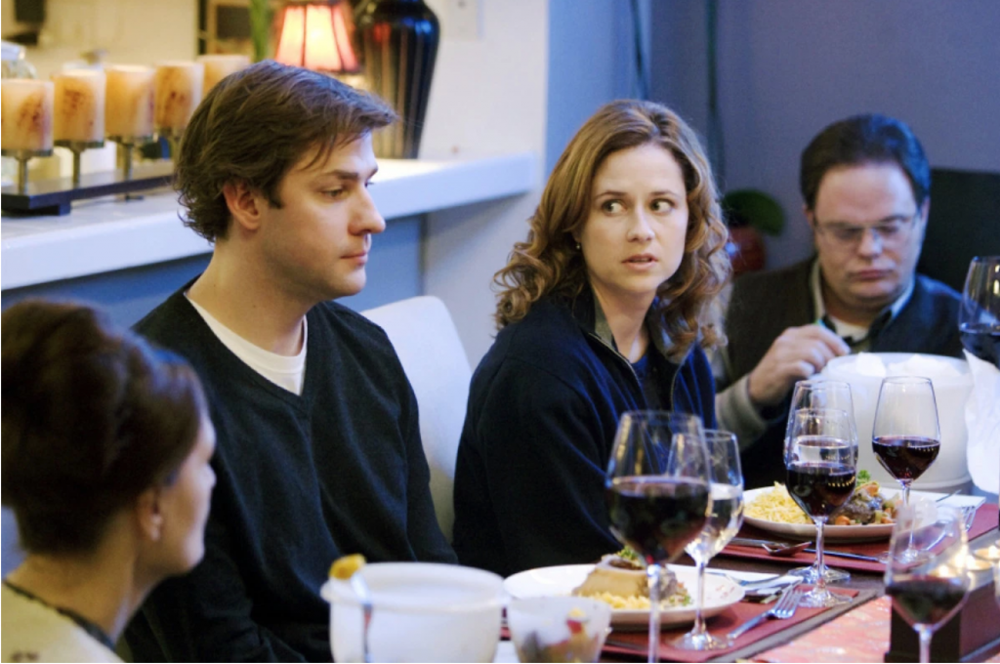

Cenário B: Uma conversa antes do jantar



Lista de personagens.
- Peter e Ruth (anfitriões)
- Stephen (engenheiro mecânico e irmão de Peter)
- Caroline (escritora e amiga de Ruth)
Peter para Stephen. Acho que a Caroline chegou. Sei que você não a conhece, mas pelo amor de Deus, tente ser educado e sociável desta vez. Da última vez que você esteve aqui, mal abriu a boca.
Stephen. Bom, ninguém disse nada que me interessasse. Só falavam sobre livros e arte. Você sabe que não tenho interesse nessas coisas.
Peter: Bem, só tente. Ela chegou. Caroline — que prazer te ver de novo. Entre e sente-se. Este é o Stephen, meu irmão. Acho que vocês não se conhecem, embora eu já tenha te falado dele — ele é professor de engenharia mecânica na universidade local. Mas primeiro, o que você vai beber?
Caroline. Olá, Stephen. Não, acho que não nos conhecemos. Prazer em te conhecer. Peter, vou querer uma taça de vinho branco, por favor.
Peter. Enquanto vocês se apresentam, vou buscar as bebidas e dar uma mão para a Ruth na cozinha.
Stephen. Peter me disse que você é escritora. Sobre o que você escreve?
Caroline (rindo). Bem, você gosta mesmo de ir direto ao ponto, não é? É um pouco difícil responder à sua pergunta. Depende do que me interessa naquele momento.
Stephen. E o que te interessa no momento?
Caroline. Estou pensando em como alguém reagiria à perda de alguém amado pela ação de outra pessoa que também ama profundamente. Foi inspirado por uma notícia sobre como um pai acidentalmente atropelou sua filha de dois anos enquanto saía de ré da garagem. A esposa tinha acabado de deixar a menina brincar no jardim da frente e não sabia que o marido estava tirando o carro.
Stephen. Meu Deus, que coisa terrível. Fico me perguntando por que diabos ele não tinha uma câmera de ré instalada.
Caroline. Bem, o que é horrível é que poderia ter acontecido com qualquer um. É por isso que quero escrever algo em torno dessas tragédias cotidianas.
Stephen. Mas como você pode escrever sobre algo assim se nunca passou por isso? Ou já passou?
Caroline. Não, graças a Deus. Bem, acho que essa é a arte do escritor — a capacidade de se imergir no mundo das outras pessoas e antecipar seus sentimentos, emoções e as consequentes ações.
Stephen. Mas você não precisaria de um diploma em psicologia ou de experiência como conselheira de luto para fazer isso nessa situação?
Caroline. Bem, posso conversar com pessoas que passaram por tragédias familiares semelhantes, para ver que tipo de pessoas se tornaram depois disso, mas basicamente é sobre entender como eu reagiria em tal situação e projetar isso, modificando de acordo com o tipo de personagens que me interessa.
Stephen. Mas como você sabe que seria verdade, que as pessoas realmente reagiriam da forma que você acha que reagiriam?
Caroline. Bem, o que é 'verdade' em uma situação como essa? Pessoas diferentes provavelmente agirão de forma diferente. É isso que quero explorar no romance. O marido reage de um jeito, a esposa de outro, e depois há a interação entre os dois, e todos ao redor deles. Estou particularmente interessada em saber se eles poderiam crescer e se tornar pessoas melhores, ou se se desintegrariam e se destruiriam mutuamente.
Stephen. Mas como você pode não saber isso antes de começar?
Caroline. Bem, é exatamente esse o ponto. Não sei. Quero que os personagens cresçam na minha imaginação, e o resultado será inevitavelmente determinado por isso.
Stephen. Mas se você não sabe a verdade — como essas duas pessoas realmente reagiram a essa tragédia —, como pode ajudá-las ou a outras pessoas como elas?
Caroline. Mas eu sou romancista, não terapeuta. Não estou tentando ajudar ninguém em uma situação tão terrível. Estou tentando compreender a condição humana em geral, e para isso preciso começar por mim mesma, pelo que sei e sinto, e projetar isso em outro contexto.
Stephen. Mas isso não tem sentido. Como você pode possivelmente entender a condição humana apenas olhando para dentro de si mesma e inventando uma situação fictícia que provavelmente nada tem a ver com o que realmente aconteceu?
Caroline (suspira). Stephen, você é um típico cientista de merda, sem imaginação nenhuma.
Peter (chegando com as bebidas). Então, como vocês dois estão se dando?
Evidentemente, neste ponto, não muito bem. O problema é que eles têm visões de mundo diferentes sobre a verdade e como ela pode ser alcançada. Partem de pontos de vista muito diferentes sobre o que constitui o conhecimento, como o conhecimento é adquirido e como é validado. Como sempre, os antigos gregos tinham uma palavra para pensar sobre a natureza do conhecimento: epistemologia. Veremos que esta é uma importante força motriz de como ensinamos.